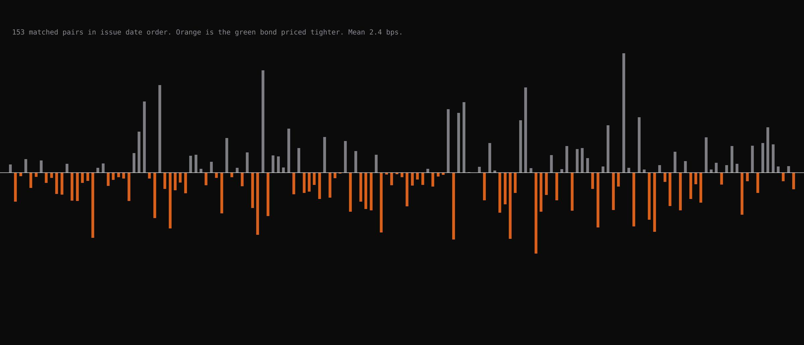
All 177 matched pairs in issue date order. Orange is the green bond priced tighter.
Do investors accept a lower yield on a green bond than on a conventional bond from the same issuer?
Method
Matched pairs, adjusted for rates, credit and maturity
663 green bonds, each matched to a conventional bond from the same issuer, adjusted for rates, credit spreads and maturity with Treasury and Moody's data from FRED. Matches were first screened with help from Claude. Every number here is preliminary.
Results
A small gap that the data cannot pin down
Average gap, green bonds priced tighter than the matched conventional bonds. 177 pairs from 103 issuers. Not statistically significant, p 0.11. The 95 percent interval runs from 10.4 bps tighter to 1.1 bps wider.
Range across other estimators and sample choices. The median pair is 8.0 bps tighter. Adding back pairs I had excluded cuts the average to 2.5. The data cannot narrow it.
Average for the 11 pairs sold within a week of each other. The tightest matches show no discount, though 11 is too few to be sure.
Test that the gap was the same across four periods from 2016 to 2026. No detectable change. After the ChatGPT launch the gap was 2.5 bps smaller, p 0.66, not significant.
Smallest true gap this sample can detect reliably. A gap of 10 bps or more is rejected. Telling 5 bps from zero would take about 470 pairs. Tests for a shift over time only see changes of roughly 18 to 29 bps.
Unique green bonds after cleaning 1,226 tracker rows. 291 parent issuers, 40 countries, about $386 billion of face value, issued April 2009 to May 2026. 270 have matured.
On a $500 million, 10 year deal one basis point of coupon is worth about $50,000 a year, so 4.7 bps would be about $235,000 a year if it were real. The data do not show that it is.
Try it
How many pairs would it take
I have 177. Each new pair is a terminal session and a twin search.
My point estimate is 4.7 bps tighter.
Smallest gap this many pairs can detect at 80 percent power
Pairs needed to detect the gap you picked
Figures
The research in thirteen charts
One script builds every chart from the results files, so the page and the charts always agree. Click any chart to open it.
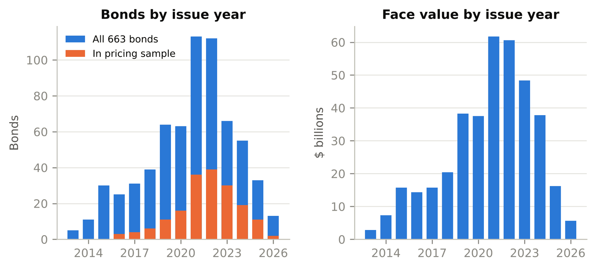
The dataset663 green bonds by issue year, with the 177 in the pricing sample in grey. Issuance peaked in 2021 and 2022. 
Why the credit adjustment mattersThe gap between each pair moves almost one for one with the change in credit spreads between the two issue dates. The slope is 0.92. Without this step, any greenium estimate mostly measures the credit cycle. 
Three steps from coupons to a greeniumThe raw coupon gap has a standard deviation of 109 bps. Taking out Treasury rates at each bond's own tenor cuts it to 64. Taking out credit, rates and tenor together cuts it to 32 and leaves a mean of 4.7 bps tighter. 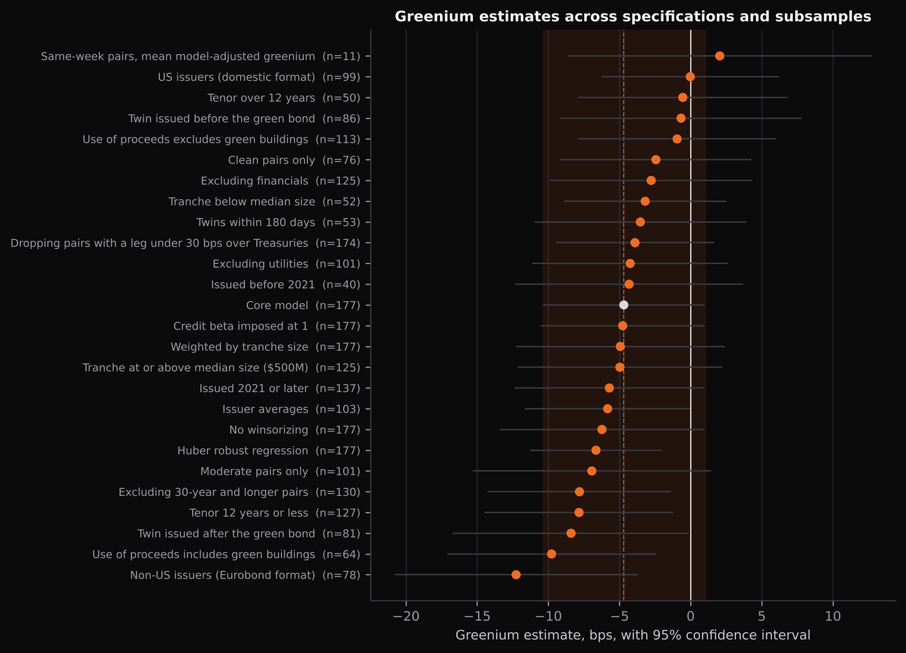
The estimate across 25 specificationsMost versions of the model land between zero and 10 bps tighter. Non US issuers sit at 12 tighter and the 11 same week pairs at 2 wider. No single choice drives the headline. 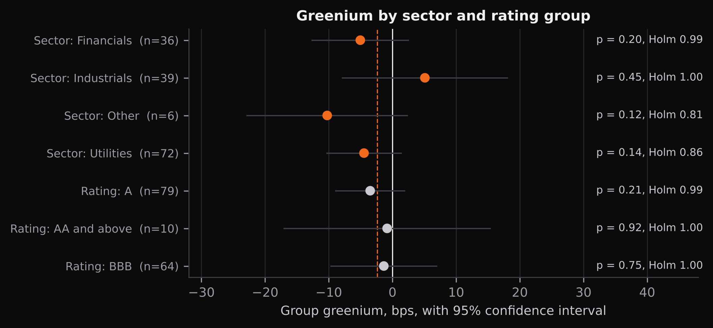
By sector and ratingFinancials show the largest discount at about 9 bps with p 0.02, but that is one of seven tests, and after correcting for that the p value is 0.15. Hold it loosely. 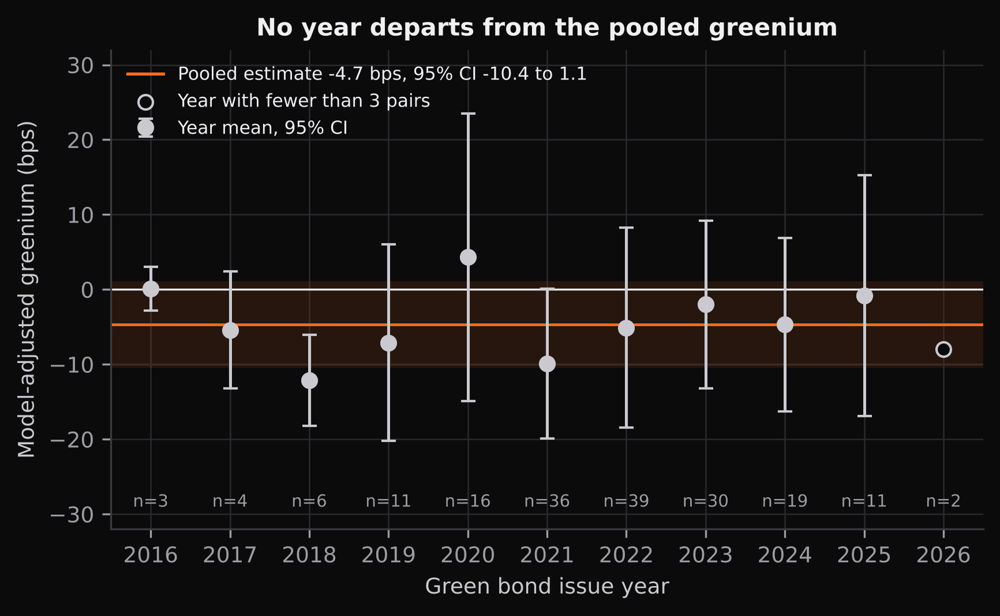
By issue yearNo year departs from the pooled estimate. The confidence intervals are wide because most years hold fewer than 40 pairs. 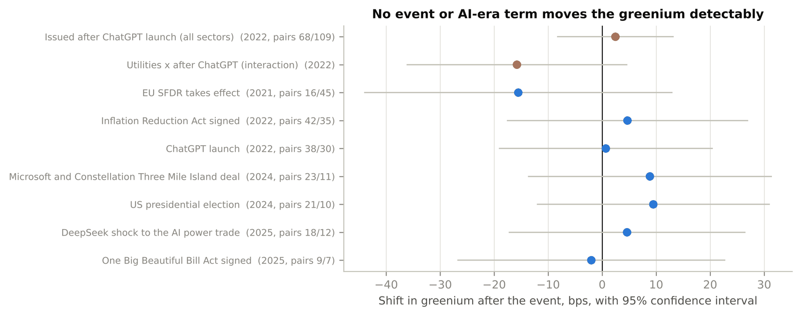
Nine dated eventsNone of them, from the EU disclosure rules to the DeepSeek shock, shifts the greenium detectably. These tests can only see moves of 18 to 29 bps or more. 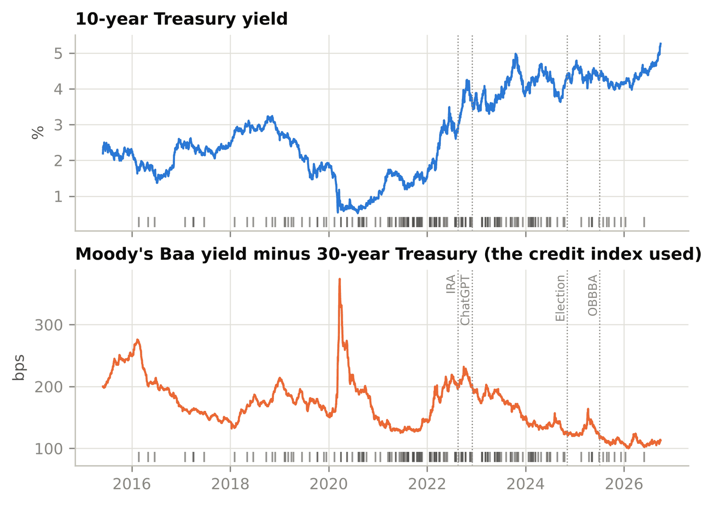
The market behind the sampleThe 10 year Treasury yield and the credit index used, Moody's Baa over the 30 year Treasury, with each pair's issue date marked as a tick. The pairs cluster in 2021 and 2022. 
How many pairs it would takeWith 177 pairs the smallest gap the test can reliably detect is 8.1 bps. Detecting 5 bps would take about 470 pairs. This is why the result is preliminary. 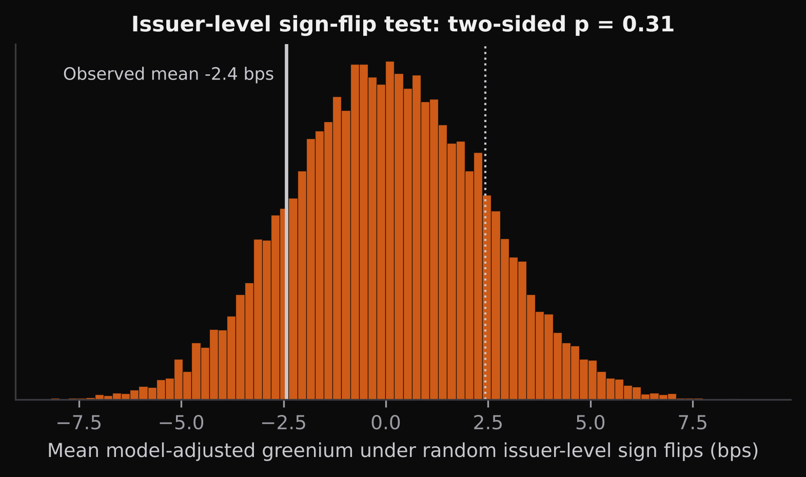
A test that does not depend on the model's assumptionsFlipping the sign of each issuer's gaps at random 20,000 times produces a mean at least as large as 4.7 bps about 11 percent of the time. 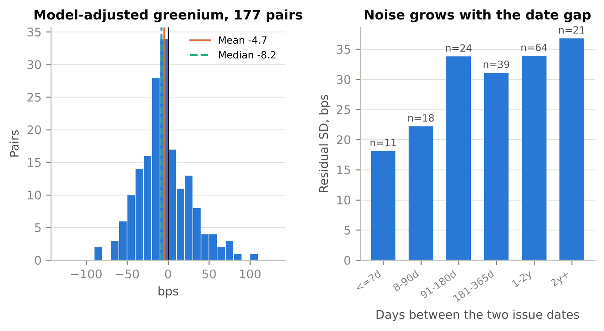
The 177 gaps, and why the date gap mattersThe mean is 4.7 bps tighter and the median 8.2. Noise grows with the time between the two issue dates, from 18 bps within a week to 37 beyond two years. 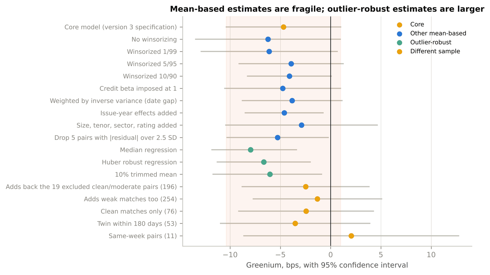
Mean versus robust estimatorsEstimators that ignore the outliers, the median and trimmed means, give 6 to 8 bps tighter. Adding back excluded pairs gives 1 to 3. The honest range is about 1 to 8 bps. 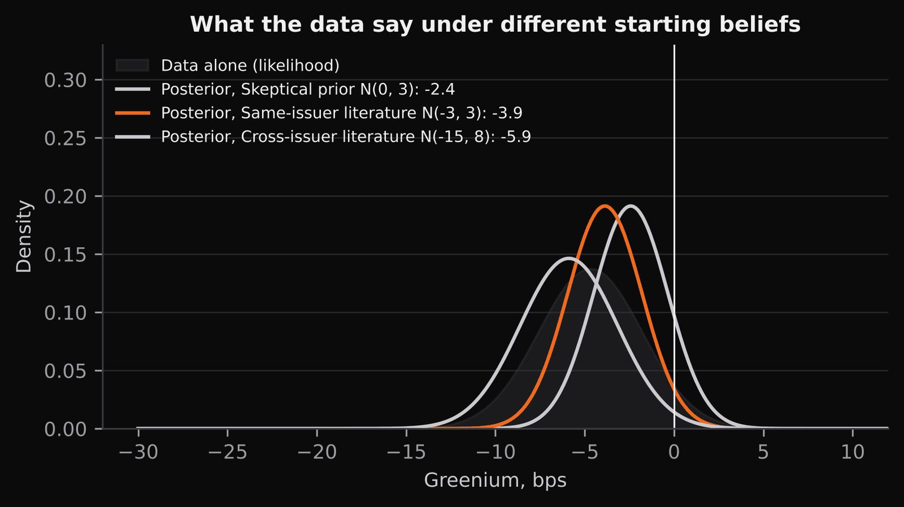
What the data say under different starting beliefsA sceptic who expects zero ends at 2.4 bps tighter. Someone who expects the larger discounts found in cross issuer studies ends at 5.9. The data pull everyone toward a small number.


What I got wrong first
A 25 bps result that was an artifact
An early version showed the gap shrinking by 25 bps. It came from measuring credit spreads over the 10 year Treasury, which picks up the slope of the curve. Over the 30 year the credit index tracks the ICE BofA investment grade index at 0.95 correlation, against 0.40 before. I withdrew the claim.
What comes next
Three things that would change these numbers
- Verifying the 32 matched pairs with the largest residuals on the terminal, then rerunning with the confirmed set.
- Replacing coupons with offering yields and daily prices, which needs TRACE and Mergent FISD access.
- Finishing the twin search for the 197 green bonds that still have no conventional match.
Sources
Where the numbers come from
Built from Bloomberg, Climate Bonds Initiative and FRED data. My supervisor approved publishing summary statistics. No bond level data is shown. Last updated October 2026.